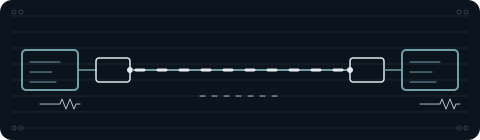
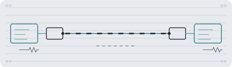
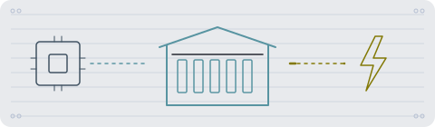

De … største af temaets … selskaberTemaets … selskaber
Tryk på et selskab for at se mere om det.
Vis alle … selskaber i temaet
Andele i PMINDI, den udgave af fonden, der udbetaler udbytte, pr. … (fondens data).


Et af de … temaer i NewDeal Invest
Hvad skal der til for, at maskinerne arbejder sammen?
En AI-beregning skal fordeles mellem servere, og resultaterne skal samles igen. Derfor handler datacentre også om kabler, lasere, netværk og drift. Zoom ud fra serveren og se, hvad der binder maskinerne sammen.

… %
af PMINDI er placeret i temaet Datacentre.
Andele i PMINDI, den udgave af fonden, der udbetaler udbytte, pr. … (fondens data).
De … temaer efter størrelse. Datacentre er nr. ….
Det har vi skrevet
Ordret uddrag af NewDeal Invests egne ugebreve og indlæg om temaet, med dato og link til hele teksten. Det er ikke en anbefaling.
»Oracle fortæller samtidig, at deres nye datacenterfaciliteter er profitable fra det øjeblik, de bliver taget i brug. Oracle regnskabet fortæller i virkeligheden den samme historie som Anthropics tal: der er kæmpestor efterspørgsel efter AI-compute.«
Nævner: Oracle, Anthropic
Læs hele teksten på bloggen (åbner i nyt vindue)»Efter at have sikret sig mindst 10 GW gennem NVIDIA og arbejdet på det fireårige “Stargate”-projekt med Oracle og SoftBank, ønsker OpenAI at undgå at blive fanget i fremtidige flaskehalse. Power-infrastruktur og godkendelser er i dag det egentlige chokepoint i AI-udbygningen – ikke chipproduktion i sig selv.«
Nævner: OpenAI, NVIDIA, Oracle, SoftBank
Læs hele teksten på bloggen (åbner i nyt vindue)Hovedgrebet
Inde i en server løber data som elektriske signaler i kobber. Men når tusindvis af servere skal arbejde sammen, er afstandene for lange til kobber alene. Så sendes data som lys gennem tynde glastråde, der kaldes fiber. Lasere og optiske moduler laver de elektriske signaler om til lys og tilbage igen, og netværksudstyr sørger for, at data kommer frem til den rigtige server.


Selskaberne
I midten står én server. Zoom ud, og den bliver til tusindvis af servere i en hal, forbundet med kabler, lys og netværk. Hver flade er tegnet efter, hvor stor en del af fonden laget fylder.
Tryk på et selskab for at se, hvad det laver.
Kablerne, lyset og netværket, der binder serverne sammen.
En laser laver lys, der kan tændes og slukkes meget hurtigt, og sådan sendes data gennem fiber. Et optisk modul, også kaldet en transceiver, sidder i hver ende af fiberen. Fotonik betyder teknik, der arbejder med lys.
Kobberkabler forbinder det, der står tæt på hinanden, og fiberkabler bærer lyset over længere afstand. Stikkene holder forbindelsen præcis og tæt. Selskaberne leverer også til andre kunder end datacentre.
Netværket bestemmer, hvor data skal hen, i hallen og mellem datacentre. Andre selskaber laver udstyr, der måler og tester forbindelserne. Forbindelseschips får mange chips i samme system til at arbejde som én stor computer.
Bygningen, kølingen og dem, der driver hallen og lejer regnekraften ud.
Cloud betyder, at man lejer regnekraft og lager over nettet i stedet for at eje sine egne servere. Oracle og Microsoft er store udbydere, hvor cloud er en del af en stor softwareforretning. Flere af de øvrige kommer fra bitcoin-mining, altså at bruge computere og strøm til at registrere bitcoin-transaktioner mod betaling i bitcoin. Nu bruger de deres strøm og bygninger til AI.
Før den første server tændes, skal der være en bygning, el og køling. Serverne laver meget varme, og kølingen leder den væk. Selskaberne her er ingeniørfirmaer og entreprenører, der tegner, bygger og installerer.
Serverne og de skabe, de sidder i.
En server er en computer uden skærm, der arbejder døgnet rundt. Serverne sidder stablet i høje skabe, der kaldes racks. Flere af selskaberne er kontraktproducenter, altså fabrikker, der producerer for andre.
Hvert lags procent er de små grupper i laget lagt sammen. Hvor stor en del af selskabernes omsætning der kommer fra AI, kan ikke opgøres. Mange selskaber oplyser ikke tallet for sig. Sanmina oplyser fx kun ét samlet tal for cloud og AI-infrastruktur. I et datacenter bærer de samme kabler, lasere og servere både AI og almindelige apps.
Naboerne
Nogle selskaber leverer også til datacentre, men hører i fonden til et andet tema, fordi det er der, deres hovedforretning er. Det gælder bl.a. selskaber, der leverer strøm, chips og harddiske.
Hovedtemaet er det tema, selskabet tæller med i.
Set udefra
Se efter: Er det beregningen, forbindelserne eller den fysiske drift, der ændres?
Bloomberg @business · på engelsk
Kort fortalt Ifølge Bloomberg skyldtes det stigende efterspørgsel efter netværksudstyr til datacentre, at Nokias overskud i tredje kvartal blev højere, end analytikerne havde ventet. Bloomberg skriver, at investeringerne i AI-infrastruktur vokser kraftigt. Nokia er ikke blandt fondens selskaber.
Hvad skal du lægge mærke til? Læs opslaget sammen med afsnittet om forbindelserne. Er det beregningen, forbindelserne eller den fysiske drift, der ændres?
CNBC @CNBC · på engelsk
Kort fortalt Ifølge Nvidia er den bygget til at blive fragtet på lastbil ad almindelige veje, og kabler og væskekøling samles på fabrikken.
Hvad skal du lægge mærke til? Læs opslaget sammen med afsnittet om maskinerne. Er det beregningen, forbindelserne eller den fysiske drift, der ændres?
The Information @theinformation · på engelsk
Kort fortalt Ifølge The Information bygger tech-chefer og AI-udviklere egne små datacentre i kældre, garager og hjemmekontorer for at undgå at betale for cloudberegning. Mediet skriver, at maskinerne giver mere kontrol over AI-modellerne, men også skaber dyre problemer med køling.
Hvad skal du lægge mærke til? Læs opslaget sammen med afsnittet om hallen og driften. Er det beregningen, forbindelserne eller den fysiske drift, der ændres?
Opslagene er udvalgt af teamet bag NewDeal Invest. Afsenderne og de nævnte selskaber står ikke bag denne side, og opslagene er ikke fondens vurdering.
Tryk på et selskab for at se mere om det.
Andele i PMINDI, den udgave af fonden, der udbetaler udbytte, pr. … (fondens data).
Udvalgte offentlige opslag om selskaberne i temaet. Opslagene er andres og ikke NewDeal Invests holdning.
Henter opslag …
Kilder: selskabernes årsrapporter og kvartalsrapporter, linket ved hvert tal.
VIDEOER OG OPSLAG
NEWDEAL INVEST · 2026-07-08
Om Datacentre · starter ved 0:00
Se på YouTube ↗NEWDEAL INVEST · 2026-09-01
Om Datacentre · starter ved 0:00
Se på YouTube ↗NEWDEAL INVEST · 2026-09-25
Om Datacentre · starter ved 0:00
Se på YouTube ↗X · 2026-10-30
X · 2026-10-30
Videre


Datacentrene hænger sammen med strømmen, der driver dem, chippen, der regner i dem, og bitcoin-mining, som flere af selskaberne kommer fra.